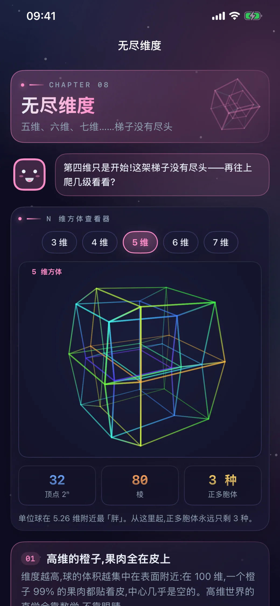
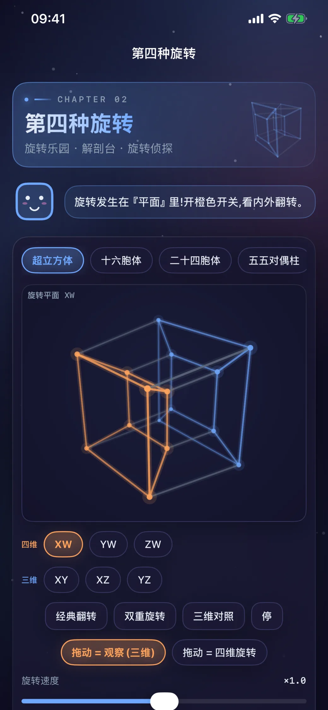
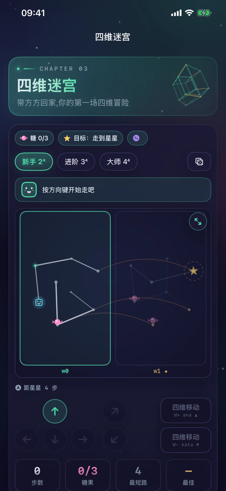
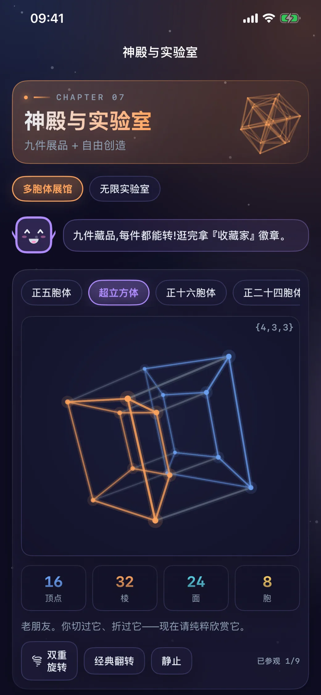

不是预录视频。
每一个顶点、每一次旋转和每一片截面，都由手机上的四维引擎实时计算。
RECORDED IN THE APP
直接看看第四维怎样动起来
四维切片
高维投影
INTERACTIVE EXPERIMENTS
从直觉开始，一步步走进高维空间
01
亲手转动真正的第四维
在 6 个旋转平面之间切换，观察超立方体如何绕第四维方向发生三维世界做不到的变化。

02
进入拥有 8 个方向的迷宫
普通空间有前后左右上下，四维迷宫还多出两个沿第四维移动的方向。

03
像 CT 一样切开四维物体
驾驶四维扫描仪穿过目标，捕捉不断变化的三维截面，建立看见高维物体的新方法。
04
观察实时生成的 120 胞体
在多胞体神殿浏览 9 件高维展品，再进入自由实验室改变形体、旋转和深度色彩。

05
从三维一路看到七维
逐维投影 3 至 7 维方体，用颜色表达高维深度，观察顶点和边怎样随维度翻倍。
8 CHAPTERS · 21 ACHIEVEMENTS
70 至 90 分钟主线内容，还有可以反复挑战的四维游戏
- 四维迷宫
- 切片捕手
- 四维 2048
- 四维华容道
- 多胞体展馆
- 无限实验室
四维世界
和方方一起，去第四个方向旅行。
在 App Store 下载支持 iOS 16 及以上 · iPhone 与 iPad